Building Automation
Industrial Automation
Power Automation & Safety


Bangladesh Distributor
Slaves
DeviceNet Slave Units are listed below. Slaves are available with many connection forms, such as MIL connectors and screwless clamp terminals.
Slaves List
There are 15 products of Slaves.
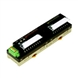 Transistor Remote I/O Terminals DRT2-[]D08(-1) / []D16(-1)
Allows I/O Expansion with Transistor Terminals
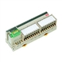 Transistor Remote I/O Terminals with 3-tier Terminal Blocks DRT2-[]D16TA(-1)
A Smart Slave with a 3-tier Terminal Block That Means Wiring Locations Are Easy to Understand with No Sharing of Terminals.
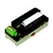 Remote I/O Terminal with Relay Outputs DRT2-ROS16
A Smart Slave with Relay Outputs and One-step Relay Replacement for Remote Maintenance.
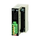 MIL Connector Terminals with Transistors DRT2-[]D32ML(-1) / []D16ML(-1)
Very Compact 16-/32-point Remote Terminals
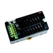 e-CON Connector Terminals DRT2-[]D16S(-1)
Includes Sensor Connector That Conforms to Industry Standards And Can Be Used to Connect Sensors with Pre-wired Cables without Using Special Tools.
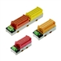 Screw-less Clamp Terminals with Transistors DRT2-[]D16SL(H)(-1) / []D32SLH(-1)
Reduced Wiring and Labor on Factory Sites with Screw-less Terminal Wiring
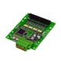 Board Terminals with MIL Connector DRT2-[]D32B(-1) / []D32BV(-1)
First Board-type Terminals for Smart Slaves!
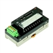 Temperature Input Terminals DRT2-TS04[]
Temperature Input Terminal with Smart Functionality
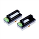 Analog I/O Terminals DRT2-AD04(H) / DA02
Performs Calculations on Analog Values within the Slave Itself. Also Provides High Resolution at 1/30,000 (Full Scale) and Support for a Wide Variety of Data Sampling.
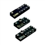 Environment-resistive Terminals with Transistors DRT2-[]D04CL(-1) / []D08C(-1) / []D08CL(-1) / []D16C(-1) / []D16CL(-1)
Environment-resistive (IP67) I/O Terminals with Troubleshooting Functions such as Sensor Power Supply Short-circuit Detection
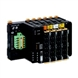 DeviceNet Communications Unit GRT1-DRT
DeviceNet-compliant Interface Unit with up to 1,024 I/O Points at One Node
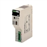 I/O Link Unit C200HW-DRT21
Ideal for Adding Advanced Functionality to Slaves or for Distributed Control
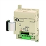 I/O Link Unit CPM1A-DRT21
I/O Link Unit for CPM2A/CPM1A PLCs
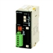 Programmable Slaves CPM2C-S1[]0C-DRT
Slaves with the Complex Functionality Needed for Distributed Blocks
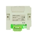 Programmable Terminal DeviceNet Interface Unit NT-DRT21
Connect to DeviceNet Using a NT31/631-series Programmable Terminal as a Slave.
Related Contents
- Automation Systems